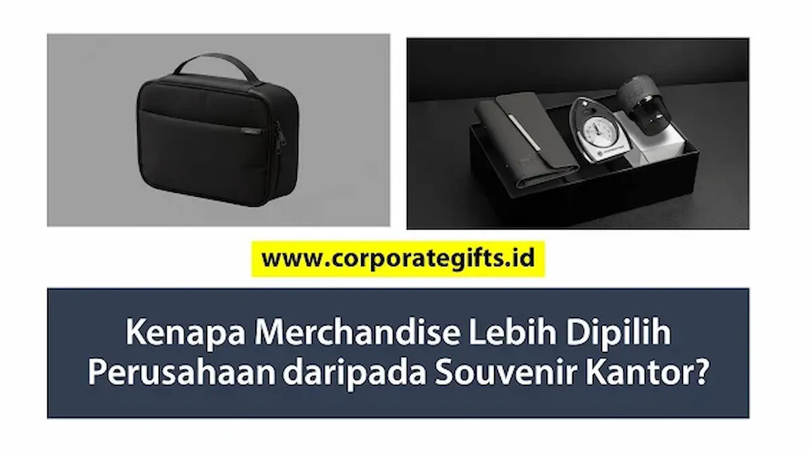

Corporate Gifts ID - Perusahaan kini lebih memilih merchandise perusahaan dibanding souvenir kantor tradisional karena produk merchandise dirancang dengan daya guna tinggi, dapat dikustomisasi selaras dengan nilai identitas merek, serta digunakan secara berulang oleh penerima dalam aktivitas harian. Karakteristik ini mengubah barang bermerek menjadi media promosi jangka panjang yang terus menghasilkan eksposur merek aktif, sementara souvenir kantor konvensional kerap kali hanya berakhir sebagai pajangan pasif di sudut meja dengan dampak komunikasi yang terbatas.
Perubahan pola perilaku konsumen dan dinamika persaingan industri menuntut setiap divisi pemasaran serta bagian pengadaan (procurement) untuk memperhitungkan laba atas investasi (Return on Investment / ROI) dari setiap anggaran yang dikeluarkan. Memberikan cenderamata bukan lagi sekadar formalitas pembagian bingkisan di akhir acara, melainkan instrumen komunikasi strategis untuk membangun kedekatan emosional dan loyalitas jangka panjang.
Poin Kunci Merchandise vs Souvenir Kantor:
- Pergeseran dari Memorabilia ke Utilitas: Merchandise memprioritaskan fungsi pakai nyata seperti botol minum, tas jinjing, dan gawai kerja yang dipakai berulang kali di tempat umum.
- Efisiensi Biaya per Impresi (CPI): Biaya produksi sekali bayar menghasilkan ratusan impresi visual gratis setiap kali produk digunakan oleh karyawan maupun mitra.
- Dukungan Kampanye Terpadu: Menjembatani promosi digital dengan kehadiran fisik merek di kehidupan nyata audiens sasaran.
- Segmentasi yang Terukur: Paket produk dapat disesuaikan secara luwes untuk program onboarding internal, hadiah loyalitas pelanggan, hingga apresiasi klien VIP.
Apa Itu Merchandise Perusahaan dan Souvenir Kantor?
Untuk memahami mengapa pergeseran ini terjadi begitu masif di berbagai sektor industri, mari kita bedah terlebih dahulu batasan definisi dari kedua instrumen tersebut:
- Merchandise Perusahaan (Corporate Merchandise): Merupakan barang-barang bermerek (branded goods) yang dirancang secara khusus dengan menyematkan identitas visual, warna korporat, atau pesan kampanye tertentu. Tujuannya adalah promosi berkelanjutan, peningkatan keterlibatan (engagement), dan penguatan persepsi citra di mata publik luas. Contoh populer meliputi tumbler stainless premium, tas tote bag kanvas ramah lingkungan, pakaian jaket berdesain modern, serta aksesori pengisi daya nirkabel.
- Souvenir Kantor Tradisional (Office Souvenir): Adalah cenderamata yang diberikan organisasi kepada tamu kehormatan, peserta seminar, atau karyawan sebagai tanda mata dan ucapan terima kasih seremonial. Karakteristik umumnya cenderung seragam, mengandalkan desain sederhana, dan sering kali memiliki fungsi pakai yang terbatas pada acara tersebut saja.
Tabel Perbedaan Mendasar Souvenir vs Merchandise
Perbedaan orientasi strategis antara kedua produk dapat dipetakan secara jelas melalui komparasi matriks berikut:
| Parameter Aspek | Souvenir Kantor Tradisional | Merchandise Perusahaan Modern |
|---|---|---|
| Tujuan Utama | Tanda terima kasih seremonial dan kenang-kenangan sesaat | Branding berkelanjutan, engagement, dan perluasan jangkauan promosi |
| Konsep Desain | Sederhana, kaku, dan cenderung generik | Bespoke custom, modis, dan menyatu dengan identitas brand |
| Nilai Fungsional | Rendah hingga sedang, sering kali hanya menjadi pajangan | Sangat tinggi, dirancang untuk kebutuhan kerja dan mobilitas harian |
| Jangkauan Impresi | Terbatas di ruang privat penerima atau laci kantor | Meluas ke ruang publik, kantor klien, kafe, dan transportasi umum |
| Target Sasaran | Terbatas pada tamu undangan seremoni dan panitia internal | Karyawan, mitra bisnis B2B, konsumen loyal, dan komunitas publik |
| ROI Pemasaran | Sulit diukur karena eksposurnya pasif | Tinggi, menurunkan biaya akuisisi merek berkat impresi berulang |
5 Alasan Utama Perusahaan Beralih ke Merchandise
Mengapa makin banyak pemimpin perusahaan dan manajer pemasaran memutuskan untuk mengalihkan anggaran belanja ke kategori merchandise? Berikut lima landasan rasionalnya:
1. Jauh Lebih Efektif Memperkuat Citra Merek (Brand Equity)
Merchandise memberikan kanvas kreatif yang luas bagi korporasi. Penerapan logo tidak lagi sekadar ditempel secara kaku, melainkan diintegrasikan secara elegan menggunakan teknik grafir laser presisi, sablon halus, atau blind deboss pada material premium. Ketika penerima mengenakan pakaian kerja berlogo atau membawa tas jinjing bermerek Anda ke tempat umum, identitas perusahaan Anda terpapar secara sukarela kepada ratusan pasang mata tanpa membebani biaya penayangan iklan tambahan.
2. Memberikan Nilai Kegunaan Nyata bagi Penerima
Kunci dari hadiah yang disukai adalah fungsi. Riset perilaku konsumen menunjukkan bahwa 85% penerima mengingat nama brand yang memberikan produk bermanfaat yang mereka pakai setidaknya sekali dalam seminggu. Produk berdaya guna tinggi seperti power bank pengisian cepat, botol minum termal, dan buku agenda eksklusif akan disimpan dengan baik, menghindarkan anggaran perusahaan dari risiko terbuang percuma ke tempat sampah.
3. Mendukung Strategi Pemasaran Terpadu (Omnichannel Marketing)
Di era digital yang serba cepat, kontak fisik justru memiliki bobot psikologis yang jauh lebih berkesan. Merchandise bertindak sebagai jembatan fisik yang melengkapi kampanye media sosial atau siaran surel. Peserta pameran yang menerima merchandise modis sering kali dengan bangga mengunggah foto produk tersebut ke akun LinkedIn atau Instagram mereka, memicu amplifikasi digital organik yang bernilai tinggi.

Koleksi merchandise fungsional yang dikurasi secara harmonis mencerminkan dedikasi profesionalisme perusahaan terhadap relasi bisnis.
4. Memperkuat Program Loyalitas dan Aktivasi Merek
Banyak korporasi memanfaatkan paket merchandise sebagai instrumen apresiasi bagi mitra yang mencapai target penjualan tertentu, cinderamata program retensi pelanggan VIP, atau hadiah kompetisi komunitas. Gestur ini menghadirkan pengalaman positif yang nyata, menciptakan rasa dihargai yang memperkokoh loyalitas kemitraan jangka panjang.
5. Skalabilitas Fleksibel Sesuai Segmentasi Anggaran
Pilihan produk merchandise sangat variatif sehingga memudahkan penyesuaian dengan batas anggaran divisi pengadaan. Anda dapat merancang paket bernilai ekonomis untuk pembagian massal di acara pameran, sekaligus menyiapkan gift set premium dalam kemasan kotak kaku eksklusif (hardbox) untuk jajaran direksi mitra kerja sama.
Contoh Produk Merchandise yang Paling Diminati Korporasi
Berikut ragam produk cenderamata fungsional yang menduduki peringkat teratas pilihan korporasi terkemuka di tanah air:
| Kategori Merchandise | Fungsi Pemakaian Utama | Nilai Keunggulan Branding |
|---|---|---|
| Tumbler Stainless Steel SUS304 | Menjaga suhu minuman panas/dingin harian | Awet hingga bertahun-tahun, ramah lingkungan, dan elegan dengan grafir laser |
| Tote Bag Kanvas Tebal 12 oz | Tas belanja, tas berkas kantor, dan seminar | Bidang cetak promosi luas, gaya hidup kasual modis, dan reusable |
| Power Bank & Wireless Charger | Cadangan daya ponsel untuk mobilitas kerja | Mencerminkan citra perusahaan modern dan melek teknologi |
| Pena Logam Eksekutif & Notebook | Mencatat poin rapat dan penandatanganan kontrak | Memberikan kesan formal berkelas tinggi di meja perundingan bisnis |
| Apparel (Polo Shirt / Jaket Windbreaker) | Seragam tim kerja dan pakaian santai akhir pekan | Mengubah karyawan dan mitra menjadi duta merek berjalan di ranah publik |
Tips Memilih Merchandise yang Tepat Sasaran dan Tahan Lama
Agar program pengadaan cenderamata membuahkan dampak optimal, perhatikan lima langkah kurasi berikut:
- Kenali Profil dan Kebutuhan Audiens: Sesuaikan barang yang dipilih dengan rutinitas penerima. Tim lapangan tentu lebih menghargai botol minum kokoh dan topi pelindung, sementara jajaran manajerial lebih cocok menerima set buku agenda kulit dan pen metal.
- Prioritaskan Standar Kualitas Material: Merchandise yang cepat rusak, robek, atau bocor justru dapat merusak citra profesionalitas perusahaan Anda. Selalu minta sampel fisik sebelum menyetujui produksi massal.
- Integrasikan Identitas Visual Secara Proporsional: Hindari mencetak logo terlalu besar yang mencolok hingga menurunkan keinginan orang untuk memakainya. Logo berukuran sedang dengan penempatan rapi justru memancarkan wibawa elegan.
- Pilih Opsi Ramah Lingkungan (Sustainability): Penggunaan material daur ulang atau serat alami seperti dibahas pada ulasan souvenir kantor ramah lingkungan memperkuat komitmen tanggung jawab sosial perusahaan (CSR).
- Rencanakan Jadwal Pengadaan Lebih Awal: Hindari memesan secara mendadak agar tim vendor memiliki waktu yang cukup untuk proses kontrol kualitas (quality control) yang ketat.
Dampak Strategis dan Perhitungan Biaya Promosi Jangka Panjang
Jika dihitung berdasarkan metrik pemasaran, biaya per impresi (Cost per Impression / CPI) dari merchandise berkualitas merupakan salah satu yang paling rendah dibandingkan media iklan konvensional. Satu buah tumbler stainless seharga Rp50.000 yang digunakan setiap hari selama dua tahun dapat menghasilkan lebih dari 1.000 impresi langsung kepada rekan kerja, keluarga, dan lingkungan sekitar penerima, dengan biaya riil kurang dari Rp50 per impresi!
Investasi ini memberikan imbal balik berupa penguatan reputasi merek yang solid, loyalitas kemitraan yang awet, serta kebanggaan tim internal yang merasa diapresiasi secara pantas oleh manajemen tempat mereka berkarya.
FAQ Seputar Merchandise Perusahaan
Kesimpulan dan Solusi Pemesanan Bersama Corporate Gifts ID
Pergeseran pilihan perusahaan dari souvenir kantor tradisional ke merchandise perusahaan adalah langkah strategis yang didorong oleh kebutuhan efisiensi anggaran, penguatan citra merek yang berkelanjutan, dan adaptasi terhadap gaya hidup audiens modern. Merchandise bukan sekadar hadiah seremonial yang lekas dilupakan, melainkan aset komunikasi berharga yang terus mengalirkan impresi positif bagi kemajuan bisnis Anda.
Siapkan pengadaan cenderamata berkualitas perusahaan Anda bersama CorporateGifts.ID. Kami menyediakan pilihan produk lengkap mulai dari merchandise kantor, paket seminar kit eksklusif, hingga gift set custom VIP. Unduh e-katalog resmi kami atau ajukan perhitungan biaya melalui formulir permintaan penawaran resmi (RFQ) untuk mendapatkan konsultasi desain mockup gratis dari tim spesialis kami.

Ditulis oleh: Arinda Zakia
Senior Corporate Gifting SpecialistSpesialis strategi promosi korporat, kurasi merchandise B2B, dan optimasi ROI hadiah perusahaan di CorporateGifts.ID. Berpengalaman mendampingi ratusan instansi BUMN, perbankan, dan perusahaan multinasional dalam merancang cenderamata fungsional yang berkesan dan berdampak jangka panjang.
Lihat Profil Lengkap & Panduan Lainnya